Industry · Shenzhen, Guangdong
Wenjie Wang
The project's technical direction and its practical application positioning are still unclear, and the team lacks first-hand knowledge of real influenza A testing scenarios.
The team designed interview questions around mutation mechanisms, clinical testing, treatment windows, test-kit updates, application scenarios and the feasibility of self-testing.
Interviewed Dr. Wenjie Wang to learn about hospital testing logic, the use of specific antiviral drugs, test-kit updates and his suggestions on air monitoring.
We recognized the gap between laboratory models and real needs and decided to focus on the conserved HA stalk region, enclosed-space testing and proactive early-warning applications.
The team had largely settled on its technical route: use engineered yeast as the chassis, display nanobodies on its surface to recognize the conserved stalk region of influenza A virus HA, and build a biosensor that can capture airborne virus and output a detection signal. But a settled technical route does not mean the project is viable; we needed a frontline clinical laboratory expert to assess its practical applicability, and we wanted to talk directly with a clinical laboratory expert to understand the real pain points of influenza A testing in clinical settings, treatment strategies and prevention needs.
Dr. Wenjie Wang pointed out that the existing IVD industry always acts only after the virus has broken out in the human body and reached the detection threshold, whereas our air-monitoring sensor could shift prevention and control from passive diagnosis and treatment to proactive prevention, issuing a warning before the virus enters the body — which has significant public health value. He also identified shortcomings in both the technical and the application side of our project:
Air monitoring involves many variables, virus concentrations in open environments are low, and the sensor's effective range may be limited.
The effective range and limiting conditions are still unclear. We need to test the effective measurement range, the size of the environment, the stage the virus is at and so on; otherwise it is difficult to define the real application boundary. (link to the hardware section)
False-positive and specificity risks are prominent. The false-positive rate of self-test reagents can reach 50%–70%; if the sensor moves toward portable self-testing, specificity and threshold determination must be solved.
The clinical need for subtyping is limited: hospitals focus on detecting whether the virus is positive or negative in order to guide treatment and do not distinguish subtypes; subtyping is announced by the CDC.
Translation and standardization are insufficient: the project is still at the laboratory prototype stage, and production, cost, standardization and actual deployment still need to be addressed.
Drawing on frontline experience, the doctor also advised us to focus on “detecting airborne virus” rather than distinguishing subtypes; to test the effective range first in enclosed spaces, controlling invariant factors before studying variables; to clarify limiting conditions such as the effective measurement range, the size of the environment and the stage of the virus; to refer to immunochromatography in developing portable self-testing while strictly controlling false positives; and to actively contact reagent manufacturers to promote translation of the results. In essence, these suggestions require us to fill four categories of data: sensitivity, specificity, environmental adaptability and application boundaries.
The team turned the expert's suggestions into action: first, firmly choose the conserved HA stalk region to achieve broad-spectrum detection and de-emphasize subtype discrimination; second, prioritize the design of enclosed-space experiments and establish a variable-control plan; third, make specificity and false-positive control a focus of subsequent optimization; fourth, define the effective measurement range and environmental limits; and fifth, this interview moved the project from a technical concept toward a problem-driven one and made us keenly aware that a cutting-edge sensor, if it is truly to serve public health, requires not only innovation but also the ability to withstand the test of clinical scenarios, environmental variables and real-world use.
Industry · Guangzhou, Guangdong
Kai Fu
Although the air-monitoring direction was recognized, questions remained about timeliness, virus concentration, cost and the boundaries of expansion.
Questions were designed around response speed, the reporter system, yeast survival, device cost, clinical scenarios and future expansion.
Interviewed Dr. Kai Fu, MD in clinical medicine at Sun Yat-sen University, to obtain advice on clinical feasibility, breath testing and grassroots promotion.
Confirmed that a single-person breath mode is superior, and that response time must be shortened, costs controlled and expansion into lung cancer approached cautiously.
The project had already focused on the conserved HA stalk region, de-emphasized subtype discrimination and begun exploring air monitoring. However, questions such as the yeast sensor's response time, reporter system, cost, yeast lifespan, comparison with existing technologies, whether ambient air or human breath is superior, and whether it could be extended to influenza B or lung cancer still needed to be calibrated.
During the interview, Dr. Kai Fu endorsed the concept of “using an organic organism to detect another organic organism”, which he considered uniquely valuable in synthetic biology. He particularly noted that the breath of people with respiratory or lung infections carries virus particles expelled with aerosols, and that the device would detect such people more effectively. But he also cautioned that the yeast signaling pathway takes about 1–2 hours from receiving a signal to expressing fluorescence; if it takes too long, the device is not timely enough. Airborne virus in ambient air is diluted, and influenza A can survive in air for only a few hours, whereas virus in the human body is more concentrated and easier to detect.
Based on these judgments, Dr. Kai Fu's advice centered on four directions. First, prioritize a single-person breath mode, supported by an enrichment device, with environmental sampling as a supplement. Second, optimize the signaling pathway to shorten response time; fluorescence requires photoelectric conversion and software readout, while blue–white screening can be judged with the naked eye but its expression time is still to be determined. Third, control hardware costs — an active breath device is expected to come down to around 10 yuan, which is what makes grassroots promotion feasible. Fourth, conduct cross-disciplinary interviews with experts in respiratory medicine, biomedical engineering, virus research and other fields, defer lung cancer testing and focus on respiratory viruses such as influenza A; expansion could follow if highly specific breath markers are identified in future. In addition, he reminded us to clarify the yeast's lifespan and replacement plan: activity peaks 2–3 days after revival and can be maintained for 1–2 weeks.
Dr. Kai Fu advised us to focus subsequently on shortening detection response time and controlling hardware cost, and to assess clinical compatibility prudently when expanding the technology. The team thereby understood the possibility of moving from “ambient air monitoring” to “single-person breath testing”. What we had gained: the technical direction was recognized, single-person breath testing is superior to environmental sampling, and low false positives, high sensitivity and ease of operation constitute differentiating advantages. What still needed to be supplemented: the expression time of blue–white screening, the cost of the complete device, long-term yeast survival and replacement plans, quantitative specificity and sensitivity data, a systematic comparison with PCR/test strips, and validation in grassroots applications. This interview advanced the project's clinical feasibility and reminded us that a cutting-edge technology must answer four questions at once: is it accurate, is it fast, is it affordable, and where is it used?
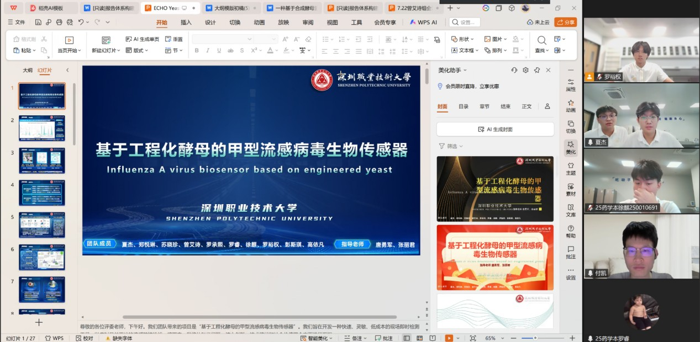
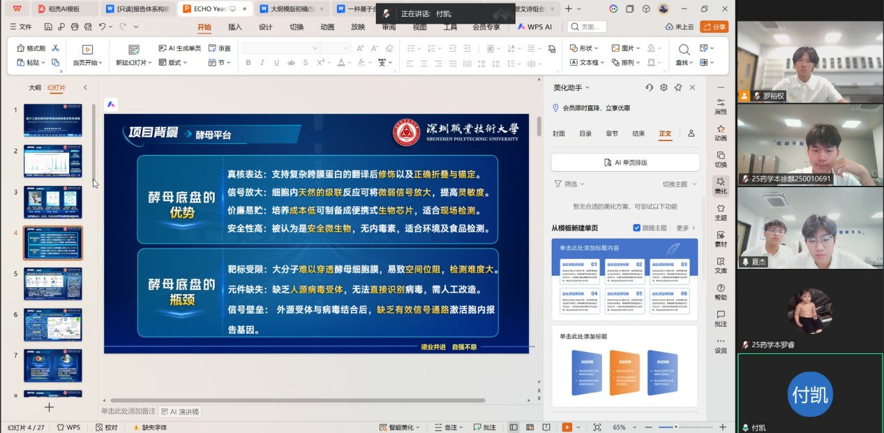
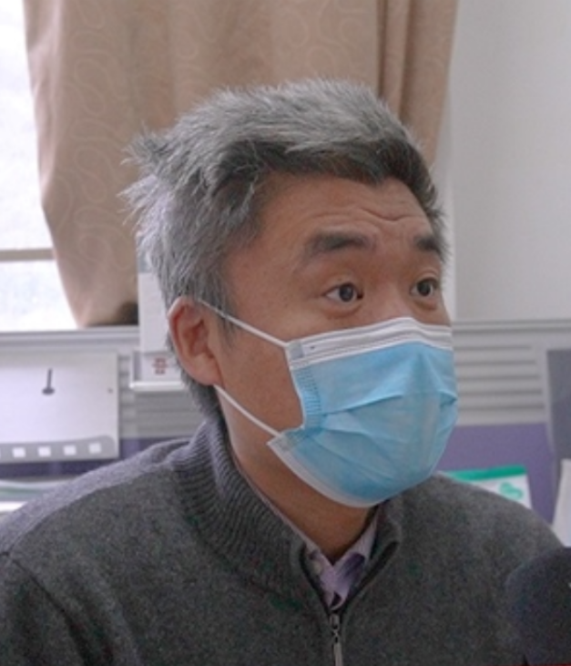
Policy and public health · Shenzhen, Guangdong
Shisong Fang
The project had settled on a technical route for influenza A detection, but the rigor of the topic selection, the choice of target genes, the bottleneck in air sampling, the registration pathway and the methods of scientific validation remained unanswered.
Interview Shisong Fang of the Pathogen Institute of the Shenzhen CDC, consulting on influenza typing, the rigor of the topic, detection technology design, air sampling, implementation and registration, and research methods.
Present the project and gather the expert's feedback on virus fundamentals, target-gene and antigen design, air collection, registration and translation, the surveillance system, and research for the competition.
We confirmed that testing for influenza A alone carries a risk of missed detection and that dual testing for influenza A and B should be included; target genes should preferentially be conserved regions; air sampling is the bottleneck of the whole chain; registration needs to distinguish research use from clinical use; and research must rely on real samples and statistical validation, while also requiring detailed investigation of influenza A's background and other details.
Although the project's technical route was settled, from the perspective of the CDC and public health we wanted to test the rigor of the topic selection and technical design. Our thinking was to focus on influenza A first, achieve influenza A recognition as a first step, and then consider subsequent expansion. We therefore interviewed the expert Shisong Fang; from the perspective of a government agency for influenza surveillance and laboratory verification, we wanted a CDC expert to review whether the idea of “focusing on influenza A recognition first and expanding step by step” holds up, and to point out regulatory issues in the technical design and later implementation that are easily overlooked.
Shisong Fang began with the rigor of the topic selection, reminding us that testing for influenza A alone carries a risk of missed detection, that the clinical mainstream is dual testing for influenza A and B, and that the project presentation must face up to this shortcoming. On technical design, he recommended using conserved genes such as M/NP/NS for typing, designing primers with reference to sequences from the past 3–5 years and using BLAST to screen conserved fragments of about 200 bp; for antigen expression he preferred the conserved HA neck region, and suggested referring to the mosaic algorithm to cover circulating strains. He also stressed that a new project must be compared side by side with mature methods such as rapid antigen tests and fluorescence PCR across multiple dimensions, not only highlighting its advantages.
Regarding airborne virus detection, the expert affirmed its innovative value and recommended crowded places such as hospital emergency departments, metro stations and schools, but advised against ICUs. He pointed out that the core difficulty lies in air-sample collection: virus particles are small, retention by filter membranes is limited, and collection protocols for bacteria and viruses are not interchangeable, so the choice of collector, wet versus dry collection, and membrane and concentration processes must be studied in depth; if the front end cannot capture the virus, no matter how advanced the back-end detection is, it is useless. On sensitivity, airborne viral loads are generally low, which places extremely high demands on enrichment and detection.
On implementation, the expert distinguished two pathways — research equipment and clinical medical devices: research use requires no stringent registration, but the results have no clinical diagnostic validity; entering a hospital requires a Class III medical device registration certificate from the National Medical Products Administration, at least three clinical trial sites, and performance comparison against mature reagents. On research methodology, he advised obtaining real clinical samples, processing data with statistical methods, analyzing advantages and disadvantages objectively, and communicating more with industry experts rather than following textbooks blindly.
At the end of the interview, the expert and the team agreed on follow-up work: the team would go back and improve the background research on influenza viruses and detection technologies; advance experimental validation with real samples and refine performance metrics and statistical analysis; subsequently engage medical-device industry experts to discuss device design, evaluate the pros and cons of the plan and determine the R&D steps; and stay in contact with the CDC expert whenever questions arose, with the expert also willing to visit the school later to review the project.
From the perspective of public health and the CDC, this interview provided criteria different from those of clinical end users and industrial translation. On topic selection, we must face up to the risk of missed detection when testing only for influenza A and include dual testing for influenza A + B in subsequent planning; technically, prioritizing conserved target genes, choosing the HA neck for antigen expression and referring to the mosaic algorithm gave clear guidance for molecular design; on air sampling, the expert identified front-end capture as the bottleneck of the chain, requiring focused study of collectors, membranes and concentration processes; on implementation, the registration requirements differ between research equipment and clinical medical devices, so the goal must be clarified as early as possible; and in research methodology, real samples, statistical validation, side-by-side comparison and reproducibility became the basic principles for our subsequent experiments and reporting. The expert also said he would be available for contact at any time and was willing to come to the school to review the project, which provided important support for its continued progress.
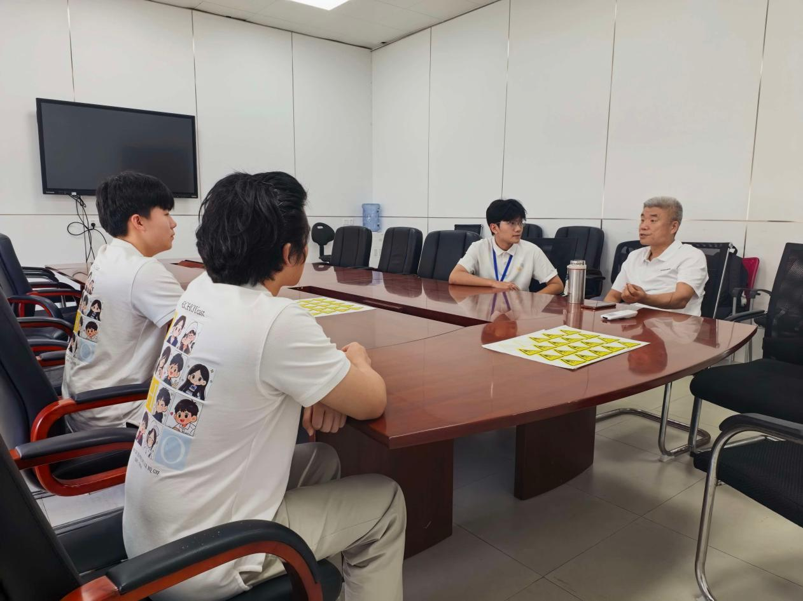
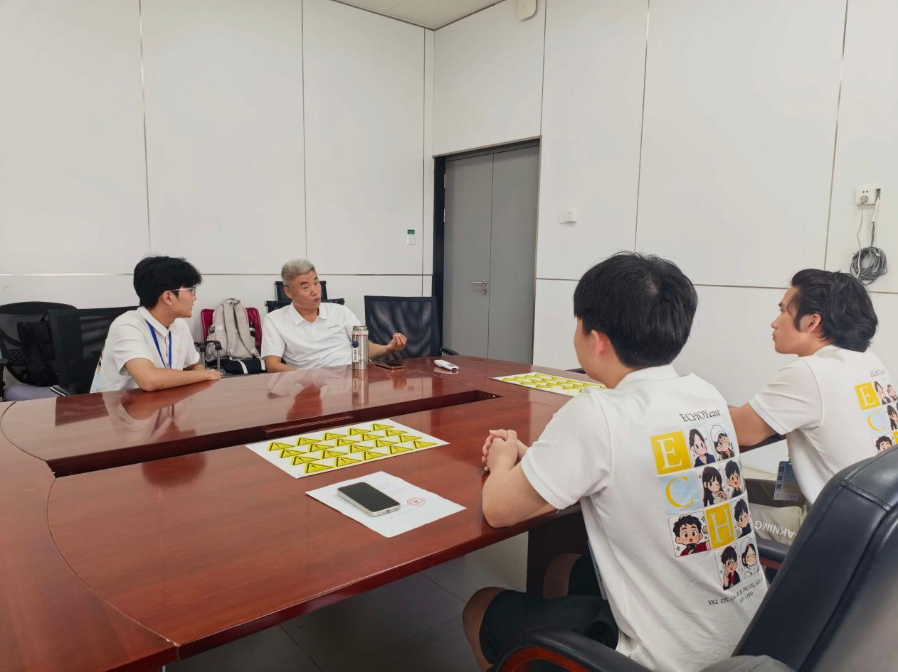
Industry and engineering · Shenzhen, Guangdong
Rongkang Deng
The project's device concept is clear, but the core bottleneck of airborne-virus enrichment has not yet been solved, and we lack experience in hardware engineering, R&D processes, component selection and competition delivery strategy.
Interview Deng, a medical-device hardware development engineer, consulting on the device plan, enrichment technology, R&D process, intellectual property and competition delivery.
Report the device concept and working mode, and gather Mr. Deng's feedback on enrichment approaches, R&D processes, competition strategy and industry practice.
Confirmed that airborne-virus enrichment is the greatest difficulty, that during the competition we should prioritize the principle block diagram and a partial demonstration unit rather than pursuing a complete prototype, and that the defense must show a thorough grasp of the principles to avoid being judged as fabricating results.
The project plans to develop a device that can collect influenza A virus from ambient air, enrich it, complete detection and issue a risk warning, targeting enclosed spaces such as schools and cruise ships. But we lack experience in hardware engineering, and in particular are unclear about airborne-virus enrichment, component selection, R&D processes and competition delivery. We therefore asked Mr. Deng, from the perspective of medical-device development, to help us judge what is realistic and what the competition stage should aim for.
Mr. Deng first helped us organize our thinking: the detection chemistry and optics are actually manageable, and the real bottleneck is the capture and liquid-phase enrichment of virus in the air. Virus particles are extremely small, so if air is bubbled directly into the reaction liquid, most of the virus escapes as bubbles and dissolves with difficulty, and after prolonged bubbling the liquid also evaporates. He proposed two approaches: first, vortex agitation, so that air and liquid make full swirling contact; second, membrane filtration, with multiple membrane layers — the upper layer retaining bacteria and the lower nanomembrane retaining viruses, which are then washed off with eluent. The trouble with membrane filtration is that viruses easily pass through the membrane and high pressure causes clogging, which can be alleviated with pulsed pressurization or shaking. He also mentioned that exosome enrichment from urine follows a similar logic: it can be done in the lab, but in engineering it runs into practical problems such as time, clogging and impurities.
On timing, Mr. Deng felt that producing a complete prototype in two or three months is unrealistic. He suggested first producing the appearance drawing, the working-principle block diagram and the module-level schematic diagrams to explain the logic clearly, and also making a partial demonstration unit of the core function rather than a fully connected machine. But he particularly reminded us that the team must thoroughly master the whole plan and must not present drawings while being unable to explain the principles, as that would be treated as fabricating results.
He also laid out a fairly clear line for the R&D process: first write the Product Technical Requirements, setting out clearly everything that can be quantified — sampling duration, air-pump flow rate, liquid volume, temperature and humidity, false-positive/false-negative metrics and validation methods — while checking industry standards and similar devices; then determine the technical route, first building a simple simulation device to verify whether the virus can enter the liquid phase and how efficient the enrichment is, without rushing to build the complete machine; then split hardware and software, with the lower-level controller handling the air pump, solenoid valves and temperature control, and the host computer providing the human–machine interface, defining the communication protocol properly; then build a prototype and iterate through testing to find the balance between performance and cost. Since the device involves live virus, internal inactivation plans and safety validation must also be considered in advance.
On tools and intellectual property, he suggested learning programming in a targeted way around subtasks rather than studying broadly; AI can be used, but key parameters and regulations must be checked against the original sources. On innovation, the vast majority of products are not original from scratch: one can refer to air purification equipment and enrichment devices in published papers, adapting parameters on an existing basis and prioritizing reuse of mature modules. On patents, the situation is relatively relaxed for students, but once commercialized, freedom-to-operate searches and design-arounds are required, and one must not directly copy or disassemble a competitor's product. Regarding yeast recognizing HA protein, he said he had not investigated commercial products of the same kind; fragment-level research might exist in laboratories, but complete devices are rare, and we would need to search the literature ourselves.
Finally, he suggested that we prioritize producing the Product Technical Requirements document, then use it as the basis for the appearance, structure and principle block diagrams as competition materials; drawing and refining the plan can be discussed further later.
This interview made the team realize that the main difficulty in building a complete device lies in airborne-virus enrichment. Subsequently we will prioritize completing the Product Technical Requirements document, clarifying the required specifications of the device we are building; based on the technical requirements, draw the appearance drawing, the working-principle block diagram and the module-level schematic diagrams as competition materials; and at the same time produce a partial demonstration unit of the core function. On component selection, we will prioritize reusing mature submodules, referring to air purification equipment and published enrichment devices and making adaptive adjustments rather than developing everything ourselves; on patents, we will carry out freedom-to-operate searches and design-arounds. For defense preparation, team members will thoroughly master the logic of the whole plan to ensure they can answer the judges' questions. Mr. Deng also said that further drawing and plan refinement can be discussed and coordinated later, providing continuing support for the project's hardware progress.
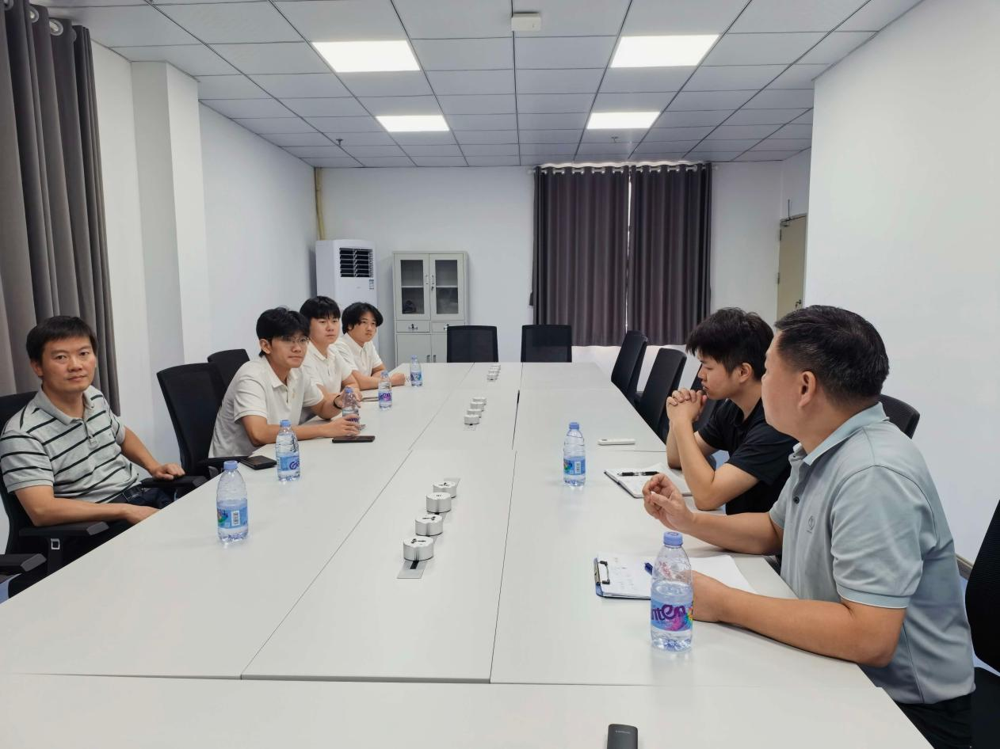
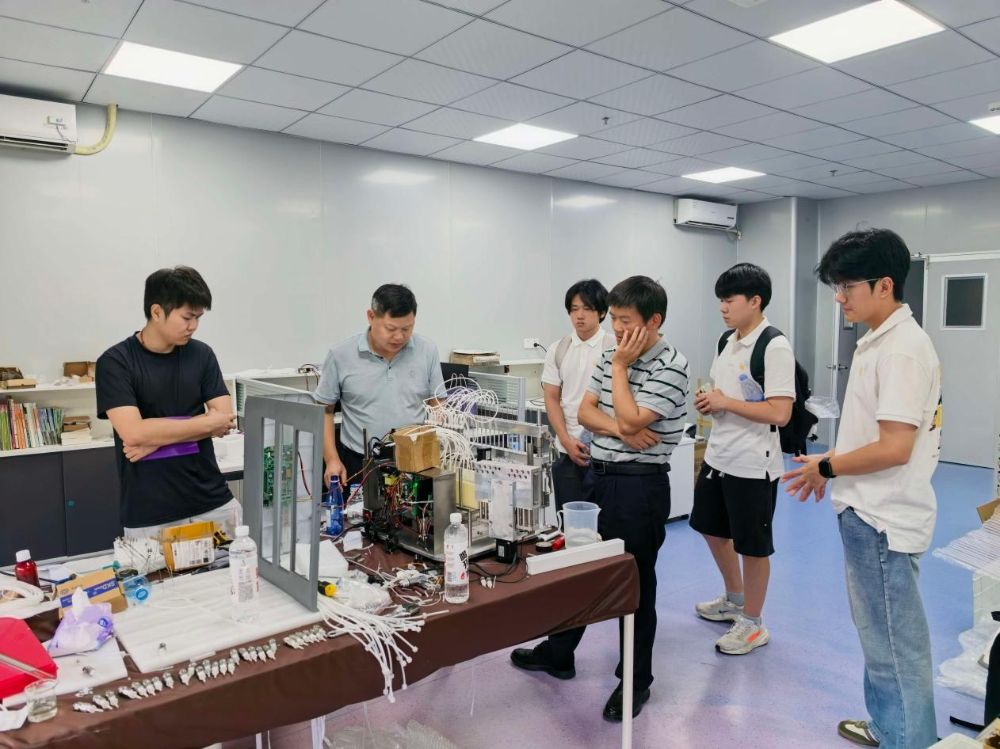
Science and academia · Shenzhen, Guangdong
Xiaolong Liu
The team has completed structure prediction for 16 nanobodies and obtained H1N1/H2N2/H3N2 HA antigens, and has carried out preliminary docking with an online website, but the applicability of the tools, the quality of the modeling, the structural preprocessing and the depth of the result analysis have not been verified.
Interview Xiaolong Liu, consulting on the choice of molecular docking tools, modeling methods, presentation of results and the validation workflow.
Report the current docking progress and the way results are analyzed, and gather Mr. Liu's feedback on tool algorithms, modeling software, free-energy decomposition, MD simulation and wet-lab validation.
Confirmed that the current methodology has systematic deficiencies: we need to remodel with AlphaFold 3.0, verify the scope of application of the docking tools, add MM/GBSA decomposition and MD simulation, and ultimately close the loop between computation and experiment through SPR/MST.
At the current stage, the team is using molecular docking to provide computational simulation support for the project; we have completed structure prediction for 16 nanobodies and obtained HA antigens of three subtypes, and carried out preliminary docking with an online website. But we are not sure whether these tools are applicable to nanobody–protein systems, nor whether the result analysis is professional enough and able to withstand reviewers' follow-up questions. We therefore asked Mr. Liu to review our methodology and validation workflow.
Mr. Liu first pointed out that the online docking website the team currently uses may not be designed specifically for protein–protein or antibody–antigen docking, and that the scope of application of its algorithm needs to be verified; nanobodies have a special structure, unlike Y-shaped IgGs, so general protein docking algorithms may not apply. He stressed that the fact that a website produces a result does not mean its methodology supports our system: we must read the original literature and confirm whether the sampling algorithm covers protein–protein docking and whether it is applicable to nanobodies.
On modeling and structural preprocessing, homology modeling tools such as Swiss-Model are unreliable when template homology is below 25%, and he suggested switching to AlphaFold 3.0, whose predictions are more accurate and come with confidence scores; after modeling, a Ramachandran plot assessment is needed, requiring more than 95% of residues to fall in allowed regions; HA structures downloaded from the PDB need to have water, metal ions and salt ions removed, and hydrogen atoms added with charge balance.
On result analysis and validation, presenting only the total binding energy is not enough; MM/GBSA free-energy decomposition should be performed, analyzing the contribution of each residue to verify whether the key interactions are concentrated in the CDR region; for visualization, heat maps and PyMOL are recommended to show binding details. Docking results represent only a rigid or semi-flexible state, so molecular dynamics simulation of at least 100 ns must be added to verify the stability of the complex; ultimately, SPR or MST wet-lab experiments should verify the actual affinity, forming a complete loop of “modeling–docking–analysis–MD–wet lab”. As for tools, industrial-grade software such as Rosetta and Boltz is authoritative but has a high deployment threshold; at this stage we can continue using online tools, but must confirm that the algorithm is public, has original literature and is widely cited by peers; PLIP can be used for interaction analysis. AI-assisted computation is acceptable, but the method must come from an open-source, peer-validated path.
This interview made the team realize that molecular docking is not finished once a result is produced — the methodology itself must withstand scrutiny. Subsequently we will use AlphaFold 3.0 to remodel the 16 nanobodies and add Ramachandran plot assessments; preprocess the HA protein by removing ions, adding hydrogen and balancing charges; verify the original literature and scope of application of the existing docking website; perform MM/GBSA free-energy decomposition and produce residue-contribution heat maps; add molecular dynamics simulation to verify the stability of the complex; and ultimately close the loop with SPR/MST wet-lab experiments. In the wiki and the report, we will cite the original literature of the methods used, provide model evaluation data, and state clearly the scope of application of the tools and the reasons for choosing them. In addition, Mr. Xiaolong Liu will continue to guide our mathematical modeling work, helping us continuously improve the connection between modeling ideas and experimental data.
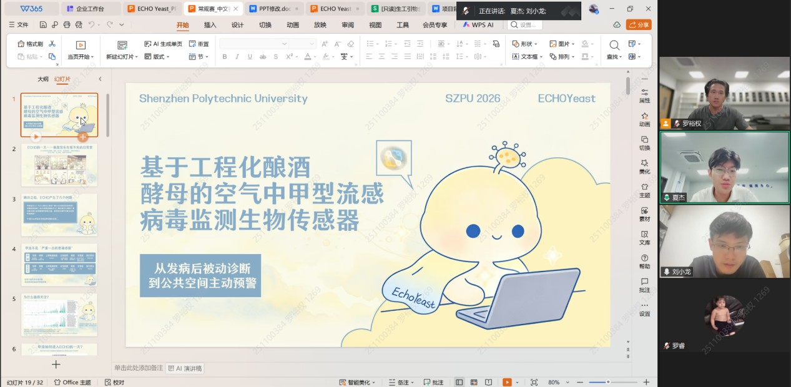
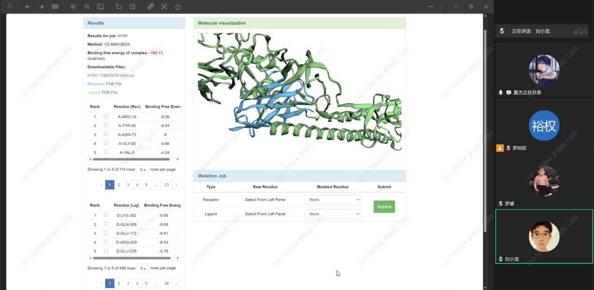
Science and academia · Xiamen, Fujian
Zhouqing Luo
The project encountered bottlenecks in yeast sensor experiments, including difficulty in Western blot characterization of membrane proteins, uncertain membrane localization of the human GPCR, plasmid fluctuation in the reporter system, and doubts about cell-wall penetration.
Interview Zhouqing Luo of Xiamen University, consulting on membrane protein detection, receptor routes, the reporter system, cell-wall permeability, signal amplification and responses to viral mutation.
Report the project's progress and problems, and gather Prof. Luo's feedback on experimental procedures, receptor modification, the reporter system, application scenarios and directions for iteration.
Confirmed that the yeast endogenous Ste2 receptor should be modified first, with short antigen epitope peptides used to get the system running; that the reporter system should be changed to genomic integration; that intercellular communication-based signal amplification should be introduced; and that conserved epitopes should be targeted with multiple parallel targets to cope with mutation.
Our project encountered considerable resistance in Western blot characterization of membrane proteins, membrane localization of protein expression, reporter-system stability and the cell-wall barrier — in particular, membrane protein detection produced many non-specific bands and the internal control would not run, and it was uncertain whether the human GPCR could fold and localize correctly in yeast. We hoped to draw on Prof. Luo's experience in yeast engineering to identify the root causes and clarify the direction for optimization.
Drawing on his own experience in yeast membrane protein research, Prof. Luo first helped us sort out the problems with Western blot characterization and the receptor route. Membrane proteins cannot be boiled at high temperature in the usual way; he suggested gentle heating at 50–70 °C for a short time, preferentially extracting proteins by mechanical disruption, using dedicated membrane-protein solubilization reagents, and introducing an HA tag to improve detection specificity and sensitivity. On the receptor, he considered that the human GPCR is affected by glycosylation differences and carries high functional uncertainty, and preferred modifying the yeast endogenous Ste2 (α-factor receptor), designing the protein structure so that it recognizes the target antigen; the signal peptide could also be replaced with a yeast surface-display signal peptide to improve membrane localization.
On the cell wall and the reporter system, Prof. Luo did not recommend the protoplast approach, because the cells are fragile and the procedure is cumbersome, which would lose the core advantage of a yeast sensor; a yeast mutant defective in cell-wall synthesis could be used instead. He also pointed out that the HA protein is only 30–40 kDa, so penetration is not the main obstacle, and short antigen epitope peptides can be used directly in early validation to get the system running first. On the reporter system, he suggested changing from a plasmid-based format to genomic integration to eliminate copy-number fluctuation; mature modification approaches for MEL1 leakage have already been reported in the literature and can be found and referenced, so there is no need to build a library blindly.
On application scenarios and subsequent iteration, Prof. Luo stressed the need to articulate the unique advantages over PCR and colloidal gold, and to clarify the positioning of “direct sensing of intact virus, portable detection”. Airborne virus concentrations are low, and if only a small amount of yeast is activated it is hard to detect, so he suggested using the yeast α-factor native cell-communication pathway to build an intercellular communication + positive feedback signal amplification system. To address viral mutation, he recommended a multi-target parallel strategy: load recognition elements for influenza A, influenza B and different mutant strains into the same chassis, preferentially recognizing conserved antigen epitopes and avoiding high-frequency mutation epitopes.
This interview gave the team clear adjustments in both experimental route and project positioning. Experimentally, we will move to modifying the yeast endogenous Ste2 receptor, using short antigen epitope peptides to get the system running first; the reporter system is planned for genomic integration; we will investigate intercellular communication plus positive-feedback signal amplification; and membrane protein detection will switch to gentle heating and mechanical disruption, with the HA tag evaluated. In the literature, we will consult iScience methods for membrane protein Western blotting, Cell papers on yeast GPCR modification, yeast surface-display signal peptides, cell-wall-defective mutant strains, and MEL1 leakage modifications. On project materials, the HP team will compile the materials and send them to Prof. Luo for review, sort out the reporting logic, and distill the unique advantages of this technology compared with existing detection methods.
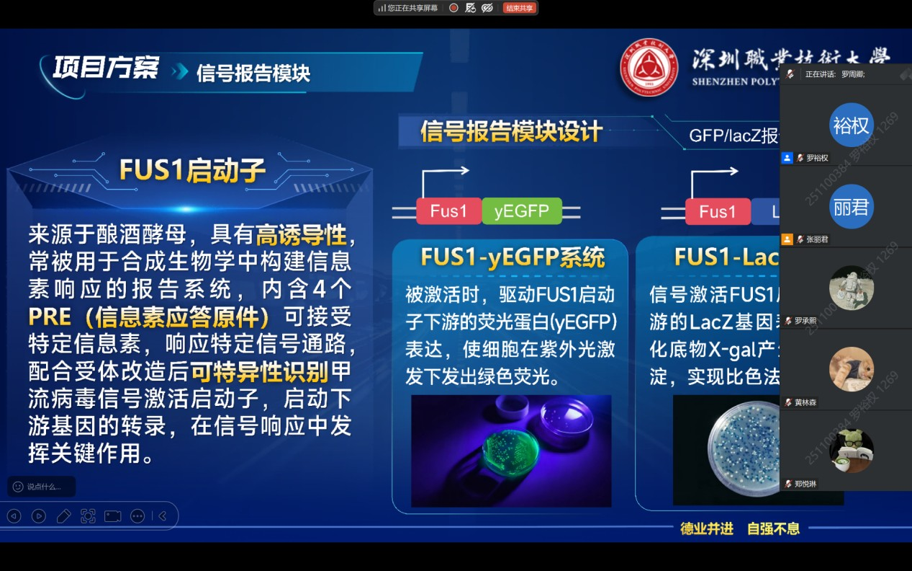
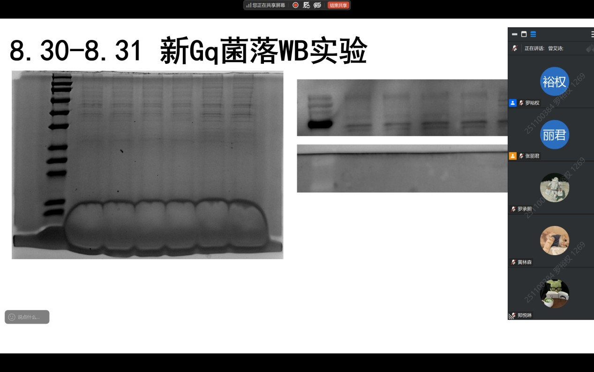